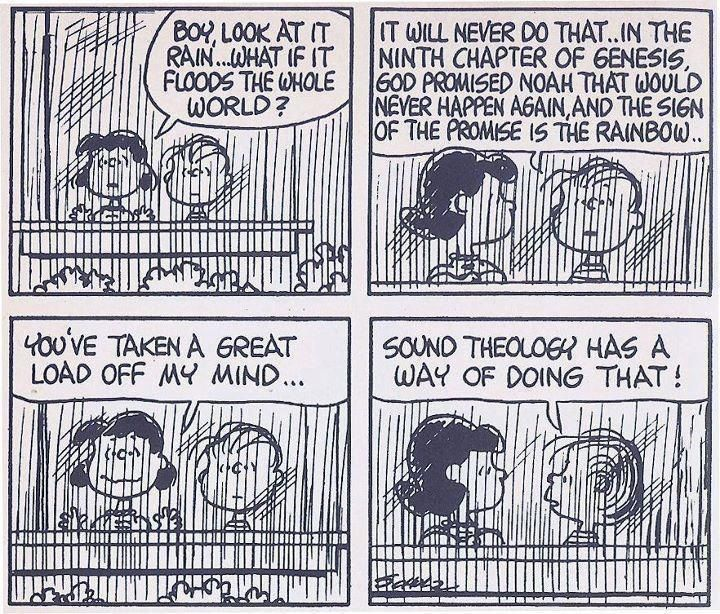

Created: 2021-01-04 Mon 18:57

We assume here that the modern period begins with the Reformation. As the course unfolds we hope to bring an understanding of the following:
Necessarily an important category for this course is the method involved with history. What does the following quote mean:
All histories, including the history of Christian theology, rest on the interplay between remembering and forgetting." (xxiv)
Placher himself sets these parameters for his text:
As we seek greater understanding of this "modern period", the question of what we know, how we can know are continual framing questions.
We will exercise some of these disciplines later in the course as we examine lists of events that happen during the course of a century. We will have to make decisions about the relative importance of these events.
Here are some video resources to provide some background perspective on our course.
Created by Dale Hathaway.